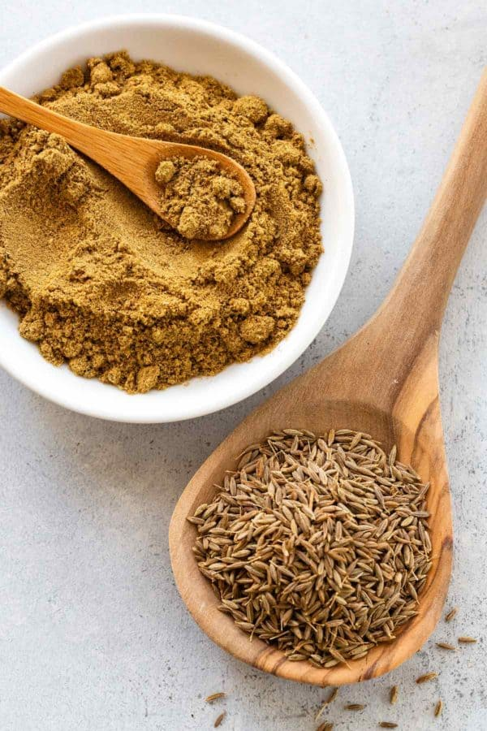
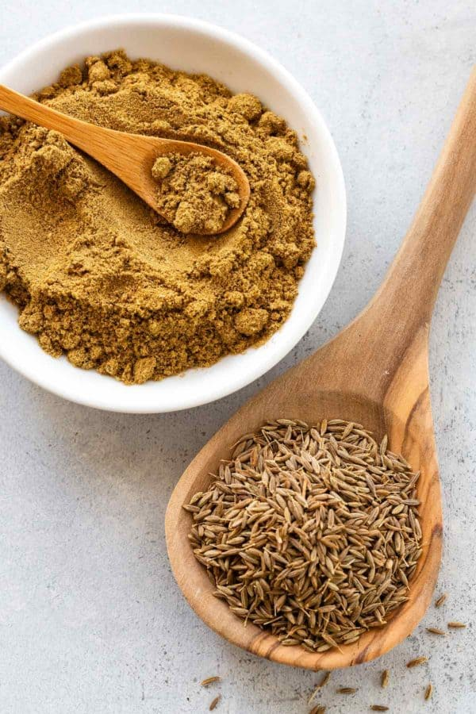
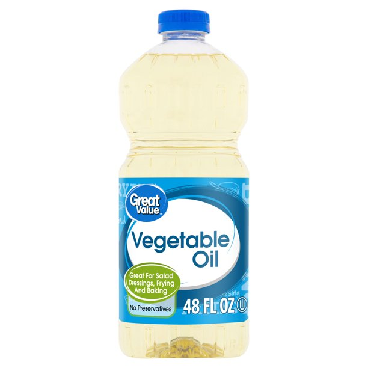
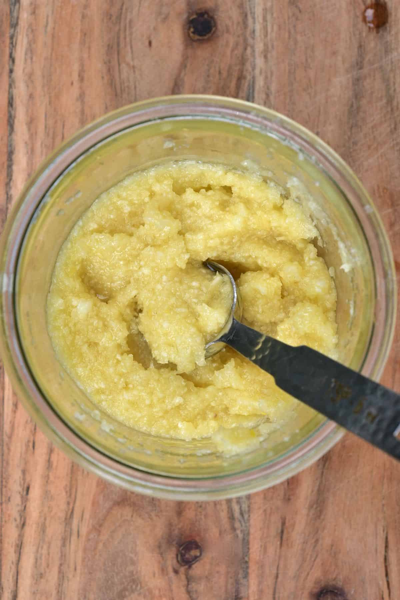

1.In a bowl with several chicken pieces, marinate heavily with ground spices (cumin, red pepper, turmeric, garam masala, coriander, pepper), salt and yogurt. Leave to absorb for a few hours.
 



2.Acquire a bowl for the stove, and add 4 tablespoons of vegetable oil. Add additional spices (cinnamon pieces, cloves, nutmeg, bay leaves, etc) and other (optional) food (chopped peppers,potatoes, tomatoes) and so on. Chop some onions and add as well, and leave to fry.



3.When onions turn brownish, add garlic and ginger paste and leave to cook for a few minutes.

4. Add the chicken mixture and add several cups of water if you wish to make it a stew. Cook for 20 minutes
Return to index